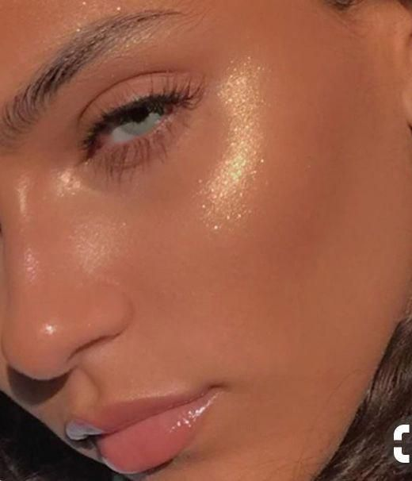
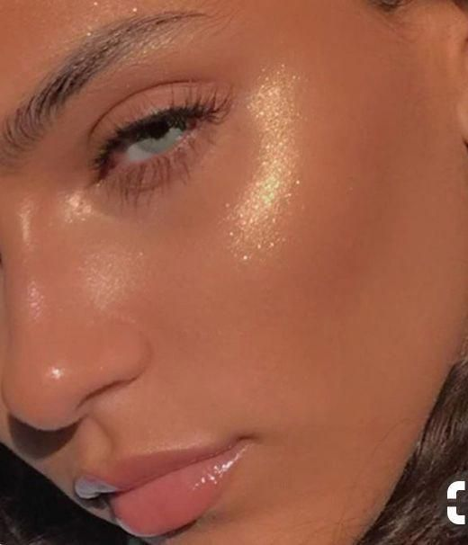

| S K I N C A R E | M O D A |
T E N D E N C I A S


G L O W U P
| Ponte al tanto con nuestras actualizaciones y crea tu propia rutina de skin care para lucir una piel perfecta al terminar la cuarentena. |  |
| S K I N C A R E | M O D A |
| Ponte al tanto con nuestras actualizaciones y crea tu propia rutina de skin care para lucir una piel perfecta al terminar la cuarentena. |  |